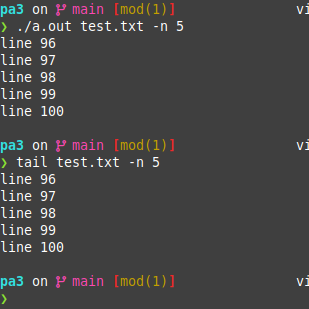

Tail
Replicates the well known tail command found on Linux systems. Built using C. Utilizes system calls read() and write() instead of standard library functions for I/O
Usage
Compile: make all
Execute: ./a.out <file name> -n [+]<num lines>
Ex: a.out text.txt -n 5 will output the last 5 lines of text.txta.out text.txt -n +5 will output all lines of text.txt, starting on line 5